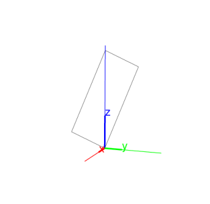

14.8.4 Parallelograms in space: parallelogram
See Section 13.9.4 for parallelograms in the plane.
The parallelogram command creates parallelograms in space.
-
parallelogram takes three mandatory arguments and one
optional argument:
-
A,B,C, three points.
- var, a variable name.
- parallelogram(A,B,C ⟨,var⟩)
returns and draws the parallelogram ABCD determined by A,B and
C.
If the option var is given, the point D will be assigned
to it.
Examples
-
Input
| A:= point(0,0,0); |
| B:= point(3,3,3); |
| C:= point(0,0,3) |
| parallelogram(A,B,C)
|
Output:

- Input:
| parallelogram(A,B,C,D) |
| coordinates(D)
|
Output: